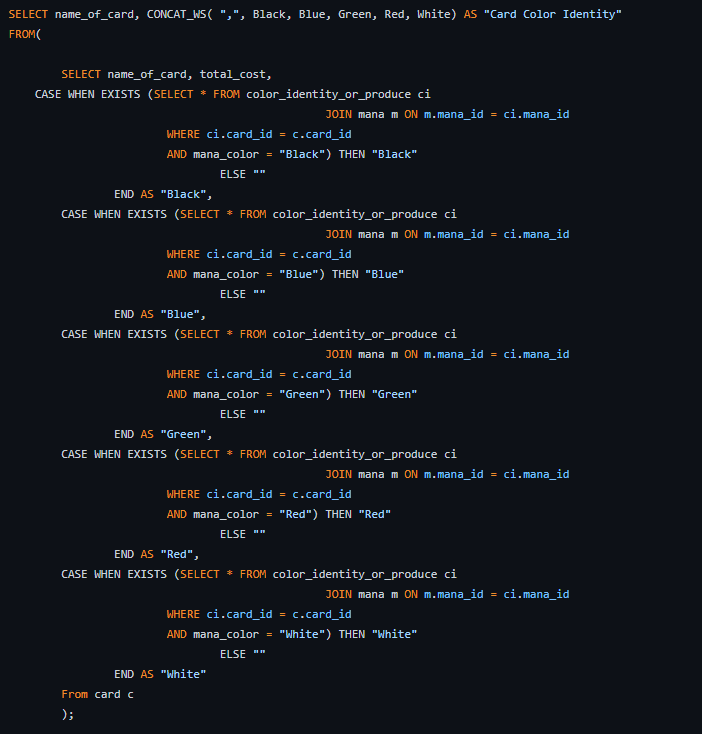

Projects

This project I used many Excel Formulas to create a Magic the gathering dashboard based off a deck I own. The spreadsheet also brings up statistics on what cards are found in the deck. Some of the formulas found in this spreadsheet are XLOOKUP, INDEX, and MATCH. The hardest part was finding a way to change the photo of the card when the user selects it.

I created a database based off my magic gathering deck. I wanted to see the relationship between certain cards in my deck. I used proper DDL and DML queries to create this database. I was able to find many relationships between different cards and this made me realize how difficult it can be to make a search engine. The database I created is found in GitHub.
A project done on a survey dataset the problem I tried to solve based off the dataset was why don't people in the United States like to talk about religion. I used many buttons and bookmarks. I even created new measures that would sort the data how I desired. I tried hard to keep the project simple and easy to follow.
The last project is a PowerShell script that scrubs a csv file.
Blog

All throughout my childhood I participated in the scouting program and have learned many different things. I have learned to really value outdoor skills. I ended up earning the rank of eagle scout when I was 14 years old. I feel like the scouting program taught me a lot of life skills at an early age. The scouting program has taught me how to take responsibility and set goals.
One of my favorite things to do is go backpacking. As a young man my father would take us on weeklong backpacking trips. One important lesson I learned while backpacking on the Island Isle royal is that you can plan and plan for weeks for a trip and there will always be something that happens that you weren’t prepared for. While on this trip on isle royal we got heavy rain one night. I woke up with a wet sleeping bag I was very upset and learned that I didn’t set my tarp up tight enough and that was what caused my stuff to get wet. I began to adjust my tarp in the pouring rain and my stake flung out of my hand into the darkness in the pouring rain. My father then woke up and asked if I was okay. Being soaking wet and 14 years old I responded NO! with tears in my eyes and a choppy voice. My father then said some wise words and asked why I was crying and upset. I mentioned that I’m all wet, and so is all my stuff. He then said, there is nothing you can do about it now. Crying won't change the matter, go change into some warm clothes and get some sleep. I learned a valuable lesson that there is no reason to be upset at something you can’t change. You can’t change the weather you just have to deal with it. I learned that you have the power to choose how you feel.
I recently taught myself how to fly fish. This was a really difficult thing to do because fly fishing is a pretty technical hobby. I did lots of research on YouTube and talked to many local fly shops to learn how to fly fish. Fly fishing is more than just knowing how to cast but also to know how to read the hatch and fish. Trout are very difficult types of fish to catch. You must know what the fish are eating to be any good at it. So being a fly fisherman requires many skills. It took me 2 weeks of fishing in the river before I caught my first fish.